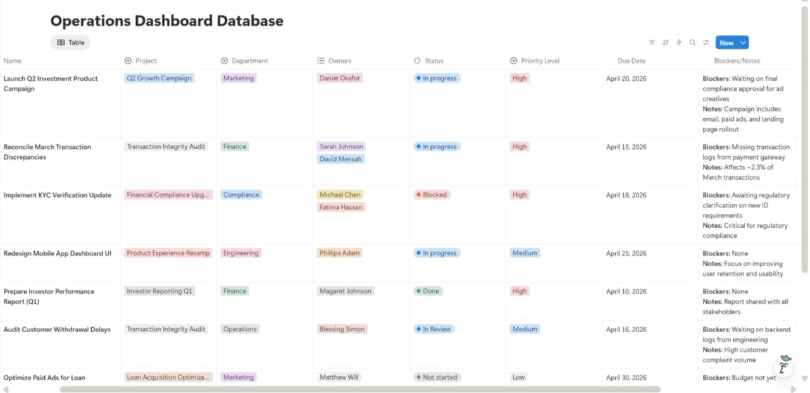
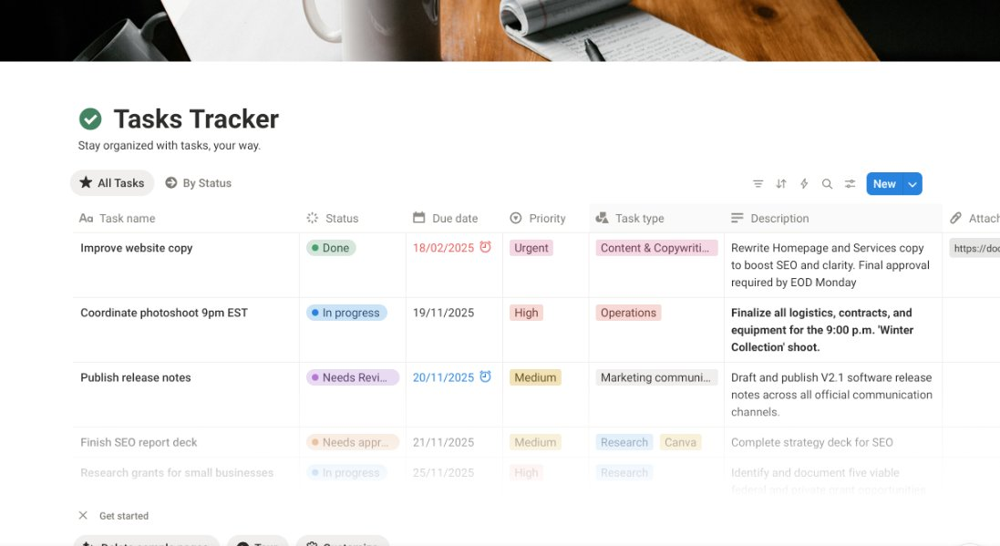
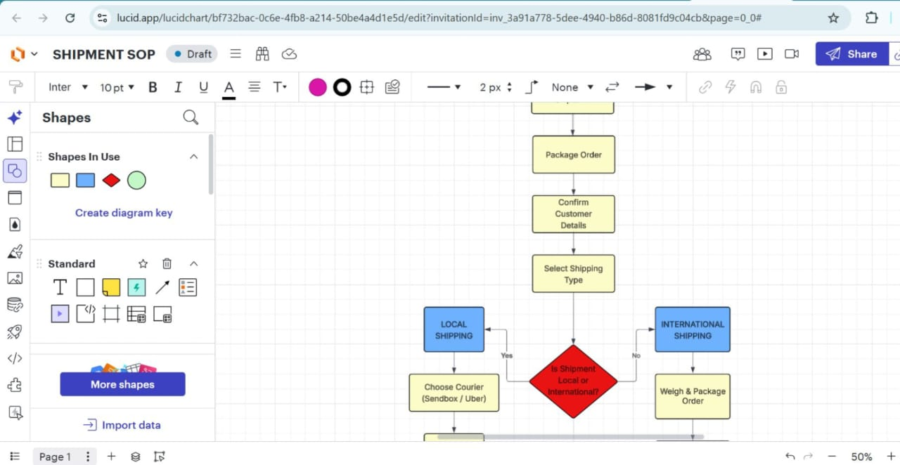
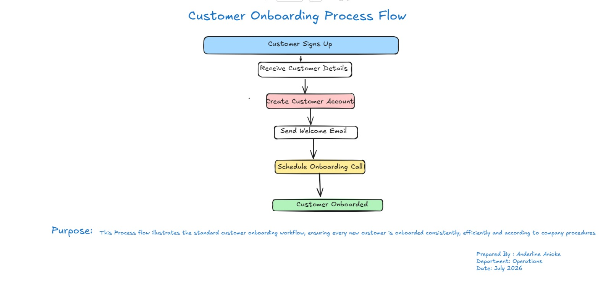
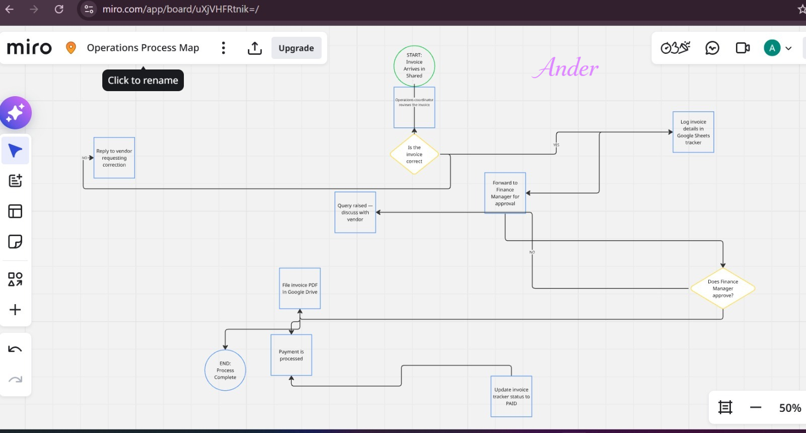
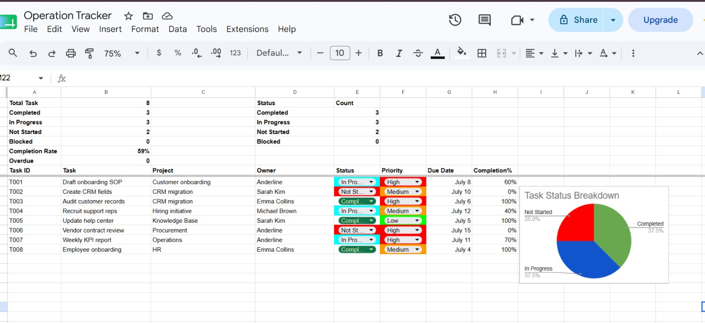
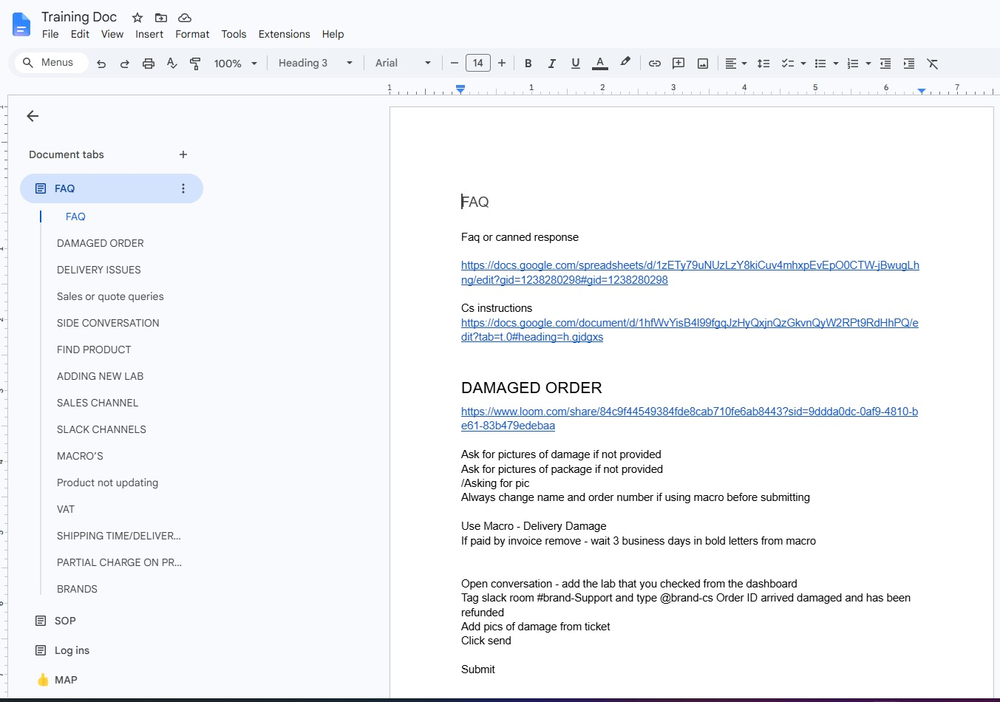
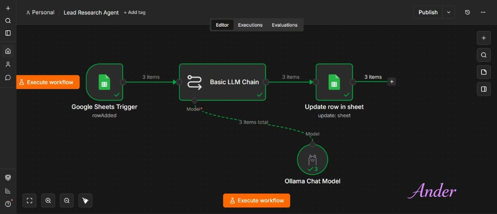
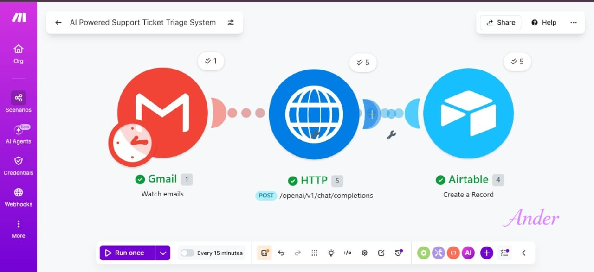

I design backend operations, coordinate projects, and automate the repetitive work — so the business runs cleanly whether or not you're watching it.
I work with founders and business owners who are great at what they do but spend too much time managing day-to-day operations. I streamline backend systems, coordinate projects, manage partnerships, and use automation to help businesses run more efficiently — so leaders can focus on growth.
I specialize in transforming operational chaos into structured, automated systems. Over the past few years, I've built frameworks integrating data tracking, knowledge management, and AI-powered automation. The result is a business backend that runs cleanly in the background, giving leadership absolute clarity and the capacity to scale without friction.

A centralized Notion system for project governance across teams — tracking 7+ parallel initiatives with a real-time bottleneck log, so nothing falls through the cracks.

Teams lacked visibility into who was doing what, causing missed deadlines. This board tracks status, priority, and links in one place, standardizing how the team works day to day.

Unclear shipping procedures were causing fulfillment errors and delays. I mapped the full process — order confirmation, shipping logic, courier selection — cutting errors and speeding up new hire training.

Unstructured onboarding meant slow activation and high support volume. This blueprint maps every milestone from sign-up to activation, giving the customer journey a consistent baseline.

Manual invoice handling caused approval delays and payment errors. This map covers the full lifecycle — arrival, review, approval, correction loops, and payment logging — so everyone knows who does what, when.

Manual tracking left management blind to completion rates and bottlenecks. This dashboard aggregates completion percentages, task status, and ownership automatically, so overdue work is visible in real time.

Disorganized support guides meant slow response times and long training cycles. This Google Docs manual uses Document Tabs to centralize FAQs, macros, and protocols in one searchable place.

Manual data entry and text analysis were slowing operations down. This workflow triggers automatically on a new sheet row, processes it through a local LLM, and writes the output back with no manual work.

Manually sorting support emails delayed responses and overloaded the team. This workflow reads incoming Gmail messages, analyzes intent with OpenAI, and logs them straight into Airtable.